E01 线网失败，广场却已被识别
CORE_RESEARCH · R4
登记南门存在，南广场也已被识别；B0目标失败和严格源线B1/B2新增0边是两种相关但不同的记录。
蓝色为原R4保存B0边；红虚线仅测距55.022米，不是连接。B3需要至少两个适用门，本馆只有一个，原B3主图撤出。
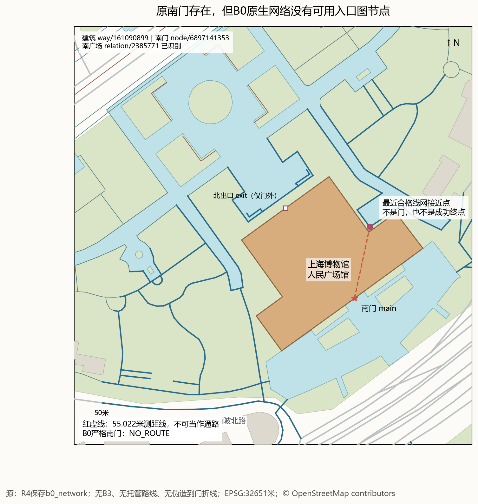
REDRAW_FROM_FROZEN_GEOMETRY · B3对本馆不适用；测距线与路由边分开。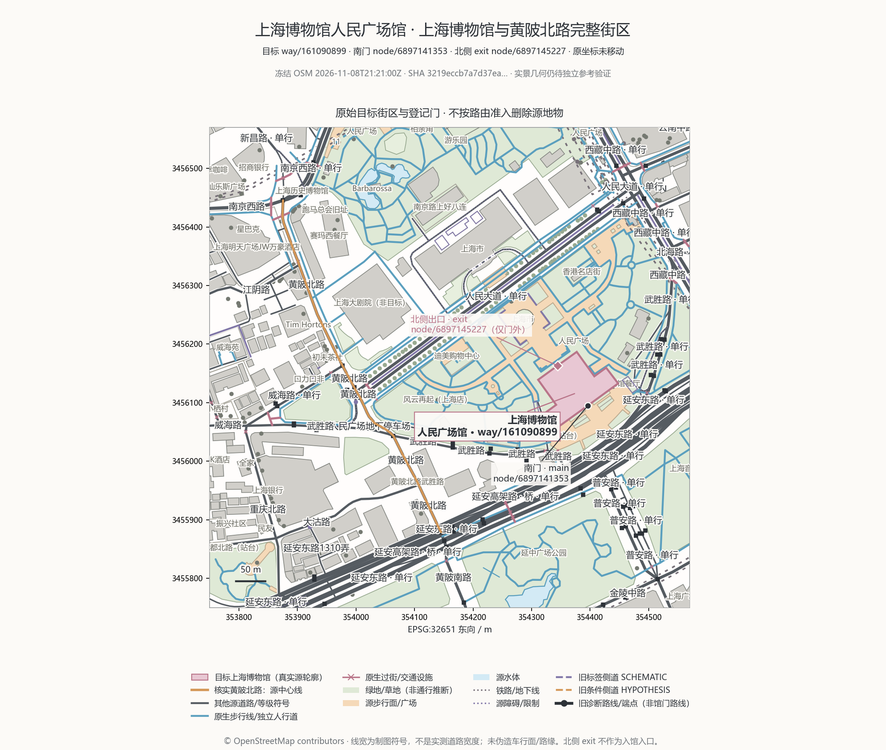
ORIGINAL_RESULT_REUSED · 真实完整街区原始地图上下文，不是算法成功图逐项数字 · 来源与SHAE02 R4→REV1：从源线门禁转向边缘派生网络
CORE_RESEARCH · R4-REV1
REV1删除“派生边必须已有同位置原生线”的循环门槛，从已标步行面内侧3米带生成网络并接回原门。
3米是事前模型设置，非测得的人行道宽度或规范值。三接点都试走，2条当前平面检查合格；另一条原生前缀碰围栏，原记录保留。1067米历史长起点不和后来的149米近起点拼接。
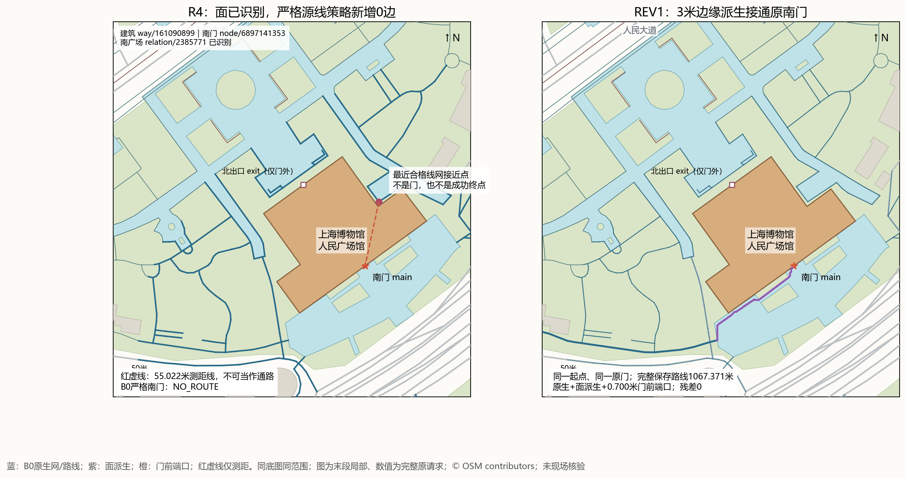
REDRAW_FROM_FROZEN_GEOMETRY · 仅重绘保存选定路线；没有重算、换起点或换门 ORIGINAL_RESULT_REUSED · 逐项数字 · 来源与SHA
ORIGINAL_RESULT_REUSED · 逐项数字 · 来源与SHAE03 北出口7.95米：区域约束不等于通行证据
CORE_RESEARCH · NORTH-ACCESS-R1
N0保留7.95米缺口；N1直线假设；N2增加31.80平方米门前区域约束却选回同一直线。
N0/N1/N2是独立历史合同；同层和现实通行未证实。exit保持原坐标及身份，只到门外。区域派生段同时为假设段，不重复加总。
 ORIGINAL_RESULT_REUSED ·
ORIGINAL_RESULT_REUSED · 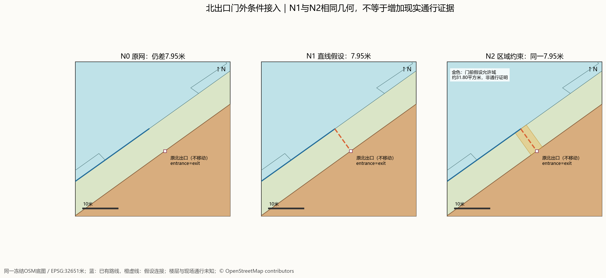
ORIGINAL_RESULT_REUSED · 逐项数字 · 来源与SHAE04 草地背景不能抹去已有原生步道
CORE_RESEARCH · WALKABILITY-R2
377段为六冻结裁片中原生有效步道去重恢复，不是推断出377条新路。
1237.81→1166.10米仅到固定北侧接点，仍距出口7.95米。71.72由未舍入值相减得到。草地未整体开放。
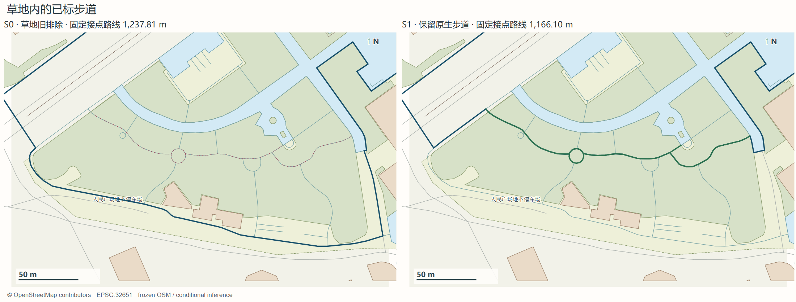
ORIGINAL_RESULT_REUSED · 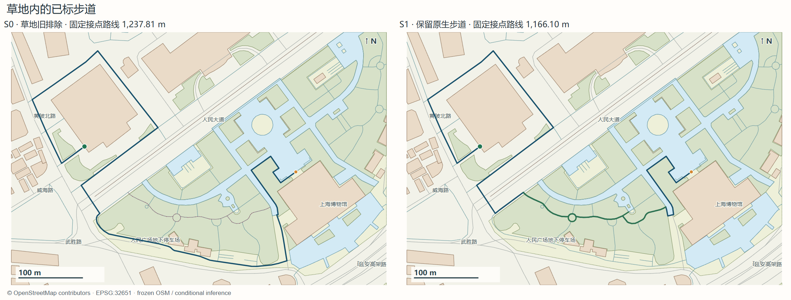
ORIGINAL_RESULT_REUSED · 逐项数字 · 来源与SHAE05 正向证据恢复：上下文确有使用，但收益有限
CORE_RESEARCH · WALKABILITY-R4-CONTEXT
保留合法圈外原段、扩大观察并显式使用上下文，提升了部分覆盖，但同一G80输入M0/M1均20/33正例可达。
强遮蔽H与几何缺标G任务难度不同，不能混成算法提升。0.47%强遮蔽历史值不和G80的0.92%直接比较；此处M1不是后来统一约束的M1-C。
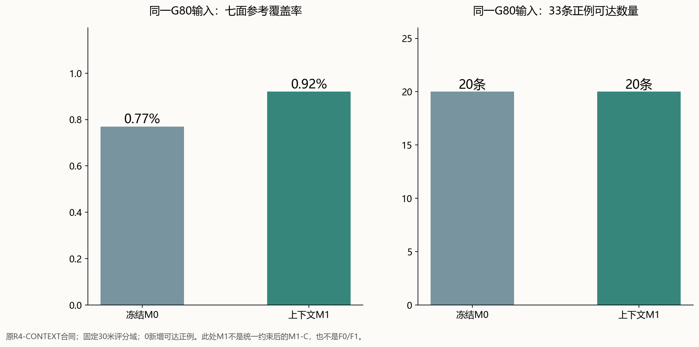
REDRAW_SAVED_REPORT_STATISTICS · 同一任务内M0/M1比较；不跨强遮蔽与几何缺标拼接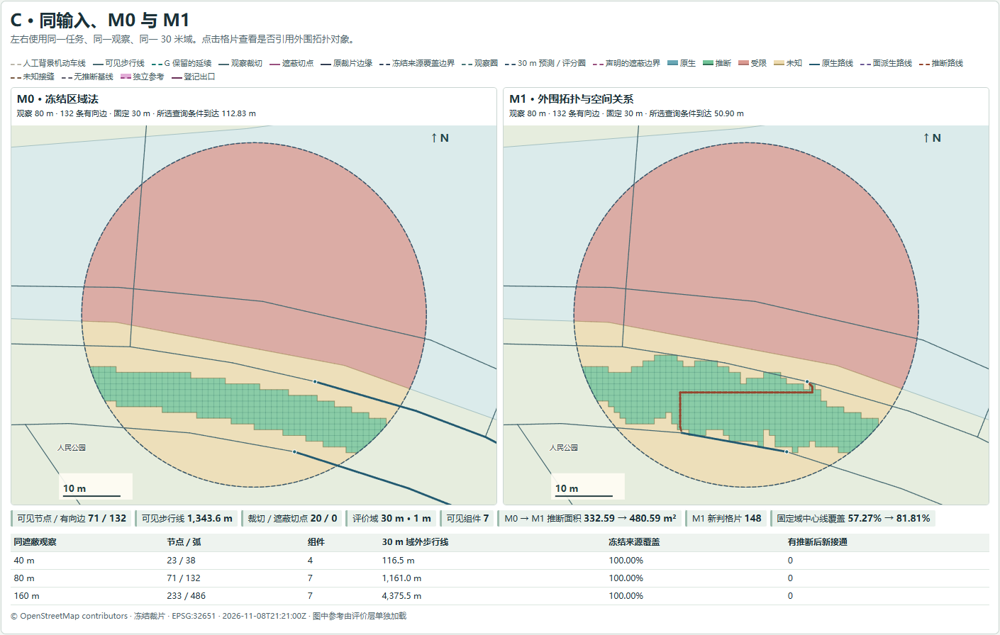
ORIGINAL_RESULT_REUSED · 保留细粒度上下文诊断图，仅作辅助逐项数字 · 来源与SHAE06 F0/F1：未知事实与条件规划许可分开
CORE_RESEARCH · FREE-SPACE-R1-FINAL
F0先排除共同已知限制，再允许剩余局部未知空间条件参与求路。F1与F0同区域、节点、边和接口，只对假设段采用有限额外成本。
同一主批33正例从20到26，新增6失去0；F0/F1可达集合相同。七面参考外10278.99平方米仅未获参考证实，不自动算全错；8障碍查询6合法绕行、2不通，已知冲突0。七正例仍失败。旧private漏导已修，不能用旧07图作当前成果。
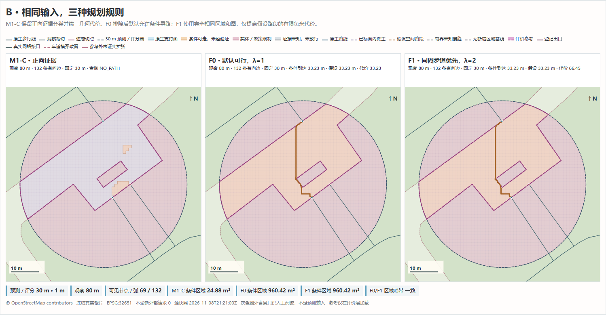
ORIGINAL_RESULT_REUSED · W2b809bbe6b8_G_080固定受控查询；不是新物理入口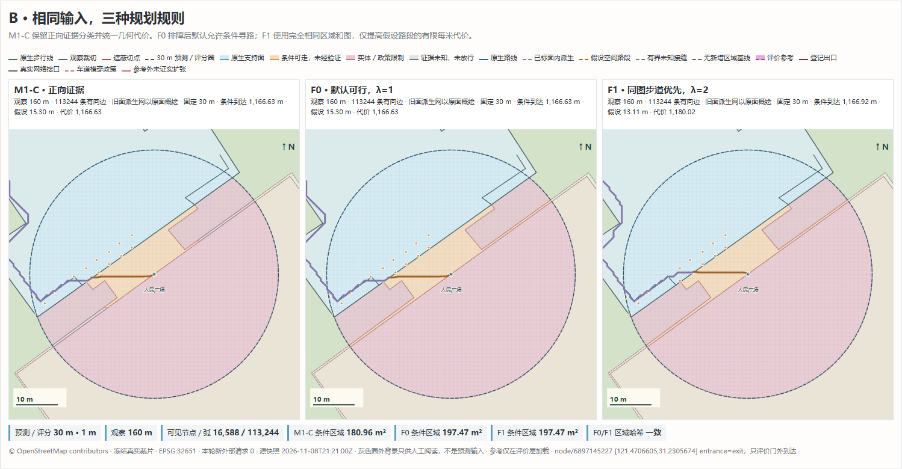
ORIGINAL_RESULT_REUSED · 原最终包图；自然北门与受控主查询分开；07旧错误图不作当前结果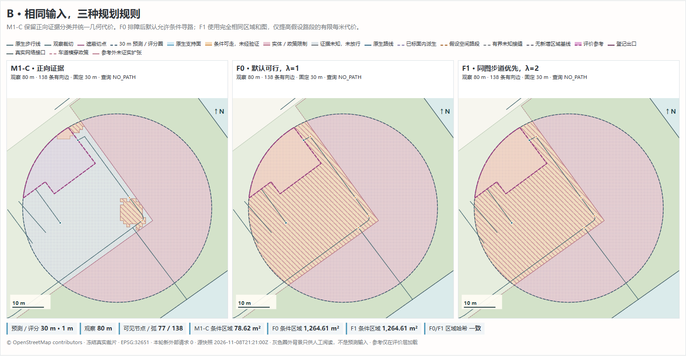
ORIGINAL_RESULT_REUSED · 原最终包图；自然北门与受控主查询分开；07旧错误图不作当前结果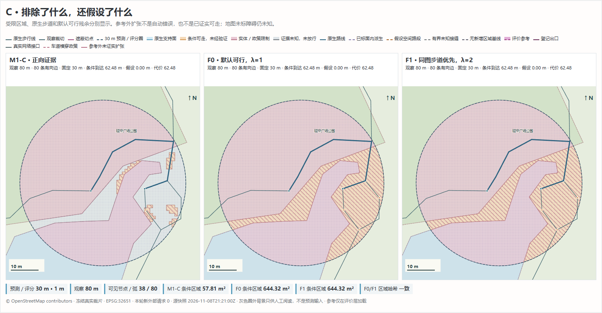
ORIGINAL_RESULT_REUSED · 原最终包图；自然北门与受控主查询分开；07旧错误图不作当前结果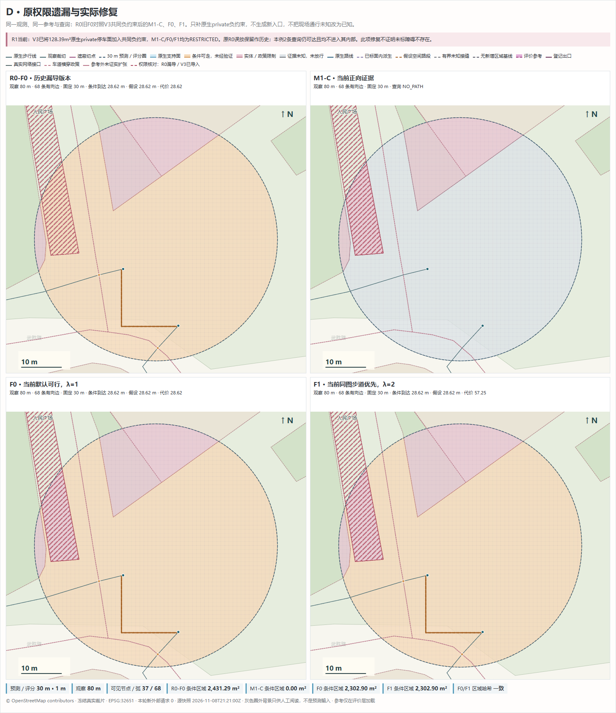
ORIGINAL_RESULT_REUSED · 原最终包图；自然北门与受控主查询分开；07旧错误图不作当前结果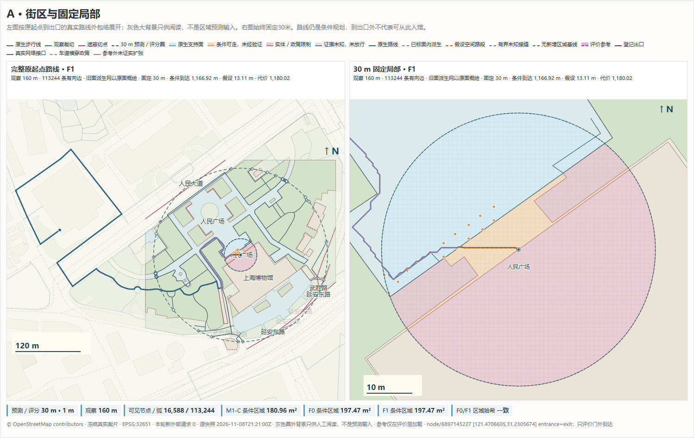
ORIGINAL_RESULT_REUSED · 原最终包图；自然北门与受控主查询分开；07旧错误图不作当前结果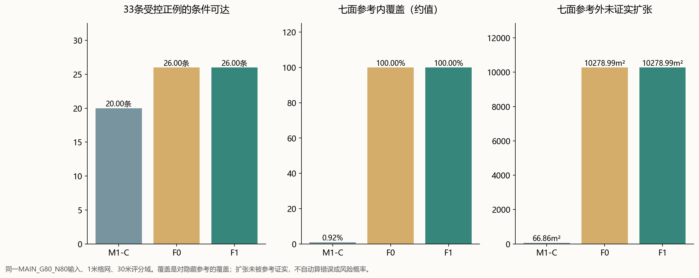
REDRAW_SAVED_RESULTS_STATISTICS · 逐项数字 · 来源与SHAE07 从3米边缘带到完整合法步行面
CORE_RESEARCH · PEDESTRIAN-AREA-SHORTEST-R1-FINAL
从边缘带到完整合法面，求解器可重选多个接点并绕洞、障碍，减少特定查询的表示绕行。
南门159.20→148.86；北出口F0 331.65→299.53，F1另算。北门假设段并未因完整面而消失。883.48→682.44是原日志相似演示，不是截图唯一请求复算。
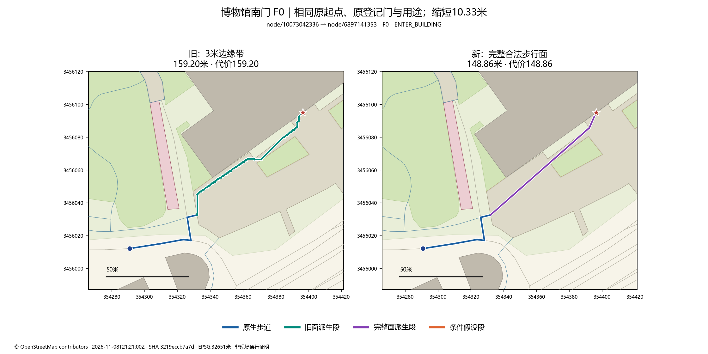
ORIGINAL_RESULT_REUSED · 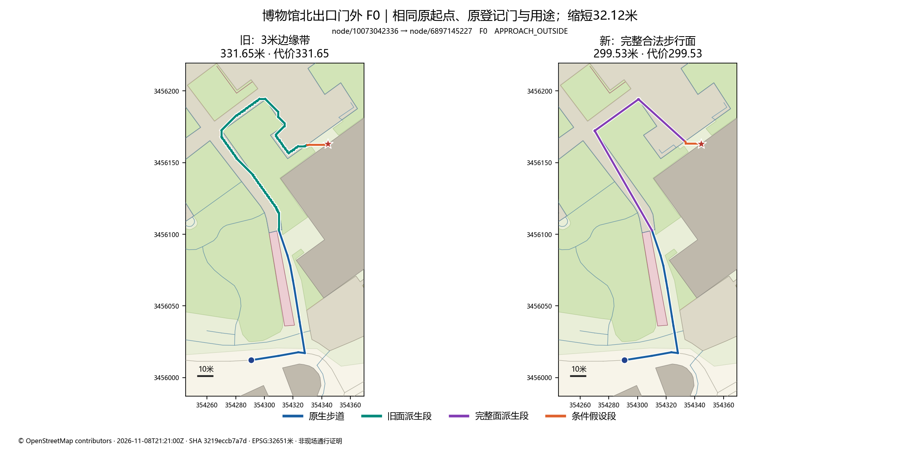
ORIGINAL_RESULT_REUSED · 逐项数字 · 来源与SHAE08 局部连通改善不等于完整业务路线收益
CORE_RESEARCH · PED-AREA-CONNECTIVITY-R2
82个新增面中36个在业务池：19经面可达但更贵、16其他有向分量、1没有当前可用接点。
局部机制3/8→5/8与四业务任务是不同查询和分母；四业务×F0/F1仍保持最小代价。不把对象数或接口记录当独立建筑数。
 ORIGINAL_RESULT_REUSED ·
ORIGINAL_RESULT_REUSED ·  ORIGINAL_RESULT_REUSED · 逐项数字 · 来源与SHA
ORIGINAL_RESULT_REUSED · 逐项数字 · 来源与SHAE09 街区侧R0/R1/R2：逻辑侧别与条件通道
SUPPLEMENTARY_RESEARCH / LATER_EXPLORATION · PG1-RESUME-STREET-SIDE-R1
R0沿用道路轴/共享街道；R1/R2才分别保留road_id+side+level逻辑身份，R2进一步增加条件缺标侧道。
24次尝试含6成本修复重测，22实际求解，最终矩阵18；R0两条ZERO_LENGTH_COLLAPSED_SIDE_ALIAS仍不是合法过街。4米偏移SCHEMATIC，缺真实侧向位置/物理平行去重/同侧广场接口验证；原生窗不是博物馆到门任务。
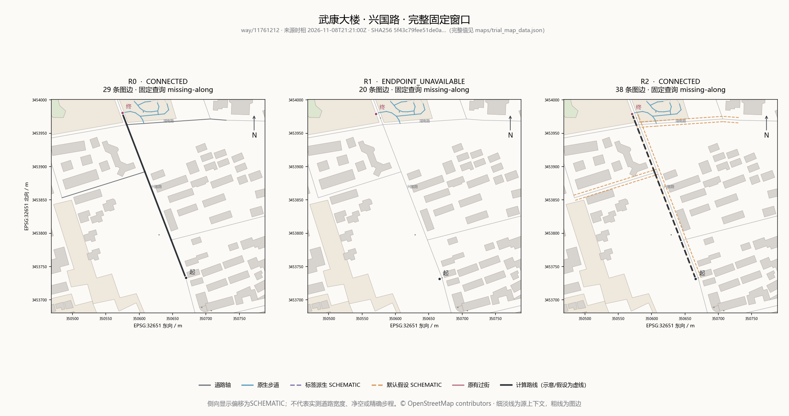
ORIGINAL_RESULT_REUSED · 兴国路missing固定窗口；4米偏移SCHEMATIC，不是真实人行道位置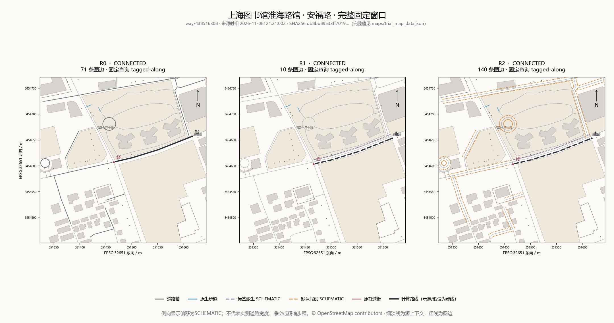
ORIGINAL_RESULT_REUSED · 安福路tagged固定窗口；不是独立验证场景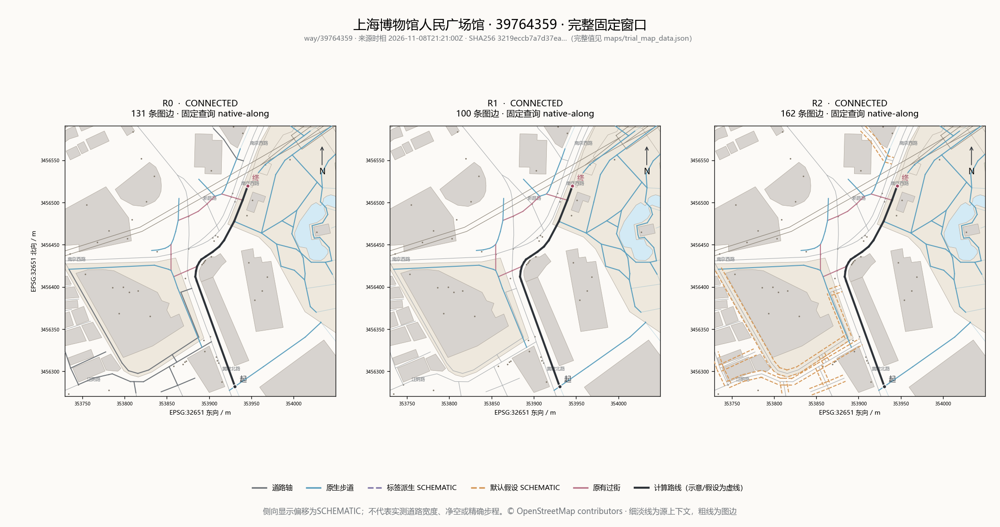
ORIGINAL_RESULT_REUSED · way/39764359原生步道窗口，不是博物馆到门路线逐项数字 · 来源与SHAE10 已知门原型、动态适配器与冷热性能
SUPPLEMENTARY_SYSTEM_INTEGRATION · E2E-R1-FIXED + SUPPLEMENTARY-20261115
旧固定APP通过CLI、HTTP、网页调用共同内核；已有新请求和分段来源实物可核验。本轮只收录当时响应、源码与截图。
原APP、Q7新状态适配器、Q8性能适配器分开。36适配器请求18PASS18NO_PATH；原Python P.plan关闭负控2FAIL，未测试HTTP动态接口。冷启动与热内核成对展示，不是实时动态导航已经部署。
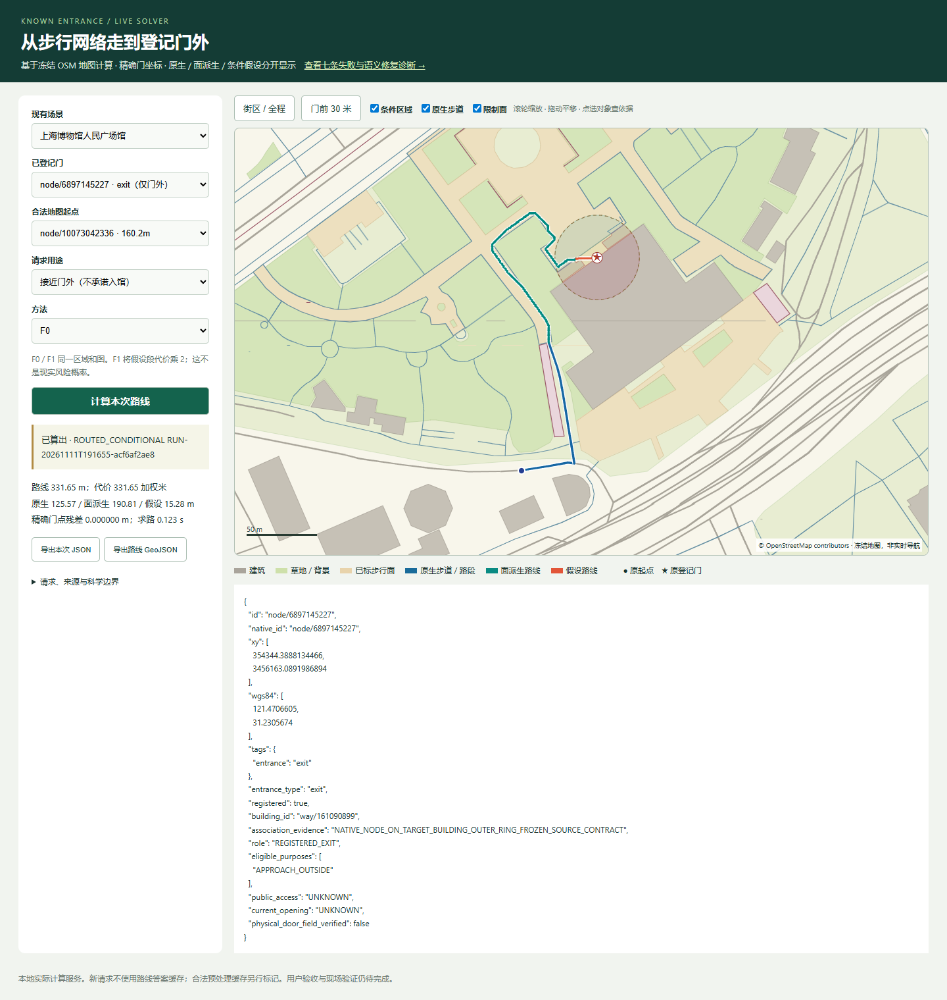
ORIGINAL_RESULT_REUSED · 历史真实APP计算和导出快照；本轮只展示，不启动服务或求路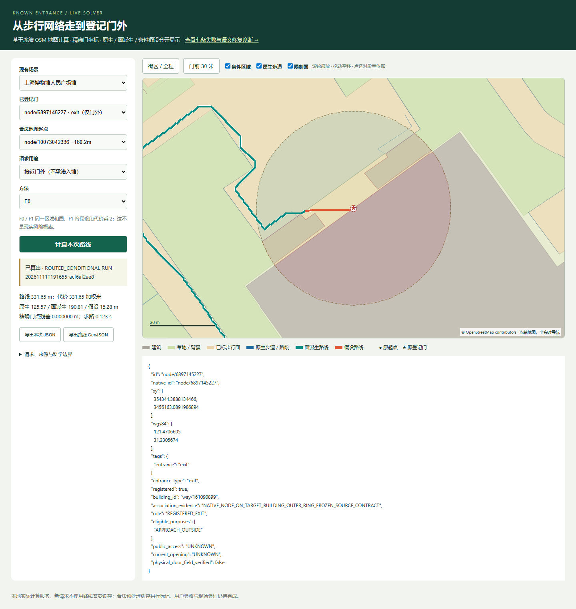
ORIGINAL_RESULT_REUSED · 历史同请求门前视图；这是旧EDGE_BAND应用版本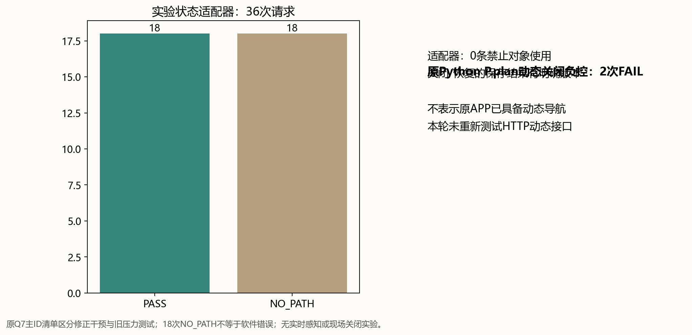
REDRAW_SAVED_RESULT_COUNTS · 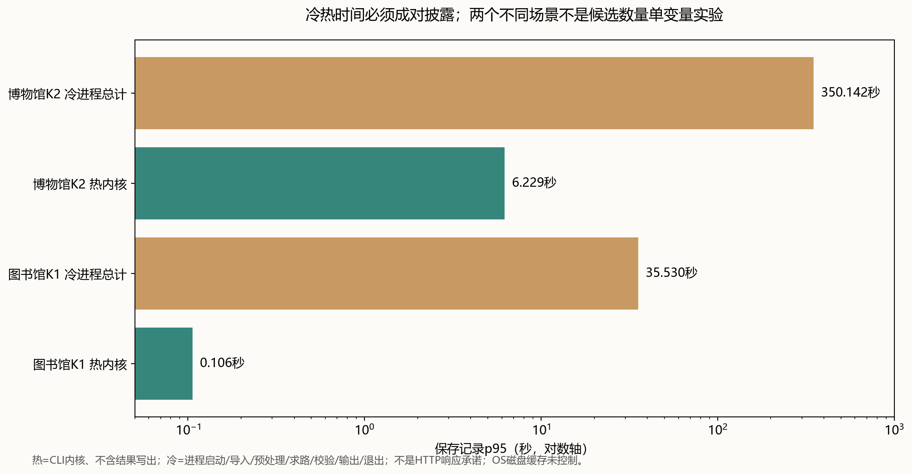
REDRAW_SAVED_PERFORMANCE · K2为逐门求解实验适配器，非原APP多门功能或尺度斜率逐项数字 · 来源与SHAE11 典型开发场景之后：适用性与独立证据仍待验证
SYNTHESIS_NOT_EXPERIMENT · CURRENT_RESEARCH_SCOPE
当前OSM主线完成了典型场景中的规则、空间表示、条件求路原型和开发/回归。
尚无跨建筑/跨城泛化证明，无现场同层与公众通行认证；当前OSM规则轨道未做正式训练，旧NYC关系模型训练属另一历史轨道。Parent Goal和用户验收没有自动通过。
 ORIGINAL_RESULT_REUSED ·
ORIGINAL_RESULT_REUSED ·  ORIGINAL_RESULT_REUSED · 逐项数字 · 来源与SHA
ORIGINAL_RESULT_REUSED · 逐项数字 · 来源与SHA